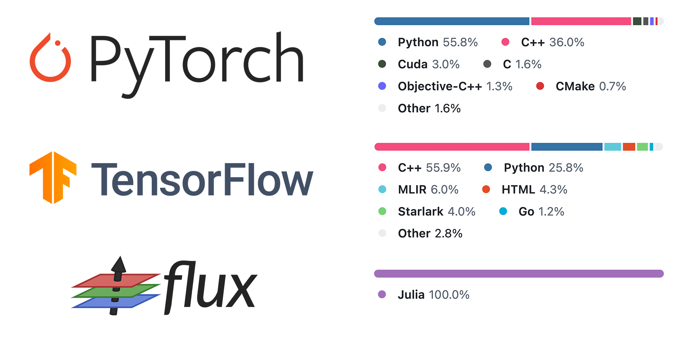

The choice of using Julia
PlantSimEngine is implemented in Julia. It arose from a particular combination of needs and requirements that Julia addresses effectively.
Other modelling frameworks, FSPMs and crop models are -often- written in combinations of Java, C++, Python, or Fortran. Given that Julia isn't the language many researchers (and developers!) are most familiar with yet, this page provides a short explanation of the reasoning behind that language choice. Another nice resource is this discourse post by Alejandro Morales Sierra, the creator and maintainer of Virtual Plant Lab.
From research to real-world applications
PlantSimEngine was originally a goal-oriented framework. Its features arose -and continue to evolve- out of necessity for more and more complex simulation setups.
While PlantSimEngine primarily helps researchers prototype and test their models efficiently, we consistently work with the vision of making it suitable for real-world applications. Our goal is to build a bridge between academic plant modeling and practical field applications. Ideally, researchers should be able to develop and refine their models in a comfortable environment, and these models could eventually be deployed in production environments.
This vision of dual-purpose functionality drives our focus on performance optimization. We aspire for the models you develop to be useful beyond academic papers, potentially serving reliably in production environments where efficiency and accuracy are crucial. Julia's strong performance characteristics support this vision in ways other languages would struggle to match.
PlantSimEngine aims to balance scientific rigor with developer productivity, with the long-term goal of ensuring that models can be deployed at scale. Julia provides an environment where researchers can express complex mathematical concepts directly in code with good performance potential, creating a pathway for these models to potentially reach practical implementation.
PlantSimEngine's constraints
Performance
While computers have gained several orders of magnitude of power and memory over the past few decades, to the point where many prior performance bottlenecks have vanished, performance can still be a limiting factor.
Simulating multiple processes with user-provided variables over many plants with tens of thousands of leaves requires a lot of computation. Using a higher-level language such as Python or R would not lead to adequate simulation times.
In fact, part of the initial motivation to commit to Julia happened after porting a model from R to Julia and getting several orders of magnitude difference in performance 'out-of-the-box'. Seeing computations that previously took minutes suddenly completing in seconds was quite convincing (see also this benchmark showing a difference of 5 orders of magnitude).
Julia, with its well-designed 'Just-ahead-of-time' compilation model and its flexibility allowing to do some lower-level optimisation, doesn't suffer from the limitations one would encounter by using only Python or R.
Flexibility, ease of use
PlantSimEngine was also developed with a few goals in mind, one of them being to make hypothesis testing quite easy. It is currently difficult to validate FSPM, crop model or ecophysiological hypotheses in many existing frameworks due to their rigid structure or steep learning curve.
Similarly, when developing a full-featured FSPM, there might be a need to test different models for a specific process, or to switch a model for a more complex one. API and language ease of use is as much of a factor as automated model coupling in keeping these changes smooth.
Packages destined to be used by a wider community
As mentioned earlier, PlantSimEngine is intended for a wide audience. Only few of them are expected to have a strong development background. Many other potential users might be researchers more well-versed in ecophysiology or plant architecture and only know a little bit of Python, Matlab or R. Reducing friction for these users is paramount.
Open-source libraries/packages, ease of installation and low entry barrier also factor in the decision.
Modularity and flexibility while retaining performance
One approach could be to combine, say, Python, with a more performant language such as C++ or Fortran. The slower but flexible language being used for prototyping, and when performance is required, some chunks are reimplmented in the other language.
This fits the performance constraint, but has a few caveats.
Low developer bandwidth
And of course, budget, time and resources are a concern. The more autonomous researchers and modelers are, and the less specialist developer/engineering resources are required, the easier it is for the project to keep evolving.
Comparison
The Two-Language Problem
Combining two different languages requires a lot of language expertise, with constant knowledge refreshing, as one might only occasionally work with and debug with the lower-level language. Or more engineering resources.
Speed of iteration is also lost whenever performance is a concern, which happens often in our context. However modular and easy-to-use a language like Python might be, whenever it's time to switch to a low-level language, development speed will slow down.
Julia effectively solves this problem. While it might be a little harder to learn than Python, and require extra knowledge to properly make use of its flexibility and performance capabilities, it leads to a smoother development experience.
Everything can be done using Julia exclusively, so there is no need to learn two languages. No need to interface between them. Iteration speed doesn't suddenly grind to a halt if a low-level implementation is needed. A competent researcher-developer can move seamlessly from prototype to production, while still being able to focus on modeling and the actual plant side of things.
 (Language usage comparison for different ML packages; source: https://pde-on-gpu.vaw.ethz.ch/lecture1/)
It seems we aren't the only ones to find Julia a good tool for our job. Other niches where Julia is gaining traction tend to be other computationally heavy areas with much active research, such as machine learning and climate modeling - areas where this balance of expressivity and performance is equally valuable.
A good balance in terms of accessibility
Another argument in favour of Julia is that one of the aims for PlantSimEngine is to be easy-to-use for researchers wishing to test hypothesis, or reproduce results from other papers. Scientific reproducibility is greatly enhanced when the barrier to running and modifying simulations is lowered.
Many researchers are not developers by trade or heart, and a Java-only or C++-only implementation, on top of the earlier points, would not be accessible enough and would not gain much traction.
Julia, while less ubiquitous than other languages in research circles, resembles Python and R and is more beginner-friendly than Java or C++. It is easier for a Python user to learn to use a simple Julia package than a C++ one.
Users will also find it easier to quickly implement new models without the potential hurdle of a low-level implementation, or some language interfacing also being required. The prototyping phase doesn't require a subsequent performance tuning phase.
Ease of environment setup
Similarly, Julia's language and package installation is -mostly- fairly straightforward and requires little additional knowledge.
The package manager is built directly into the language, making dependency management straightforward. This is particularly important for reproducible scientific workflows, where consistent environments are crucial.
Downsides acceptable
While very practical for a 'researcher-developer', Julia is of course far from being the perfect language in every discipline. It is massive in terms of features, has a heavy runtime, is more involved to learn and master quickly compared to Python, has a few hurdles for beginners, some quirks that can be awkward for developers, tools that aren't fully mature, no clear 'recommended' workflow, and so on.
The cost for switching may not be worth it in many other circumstances. However, several of these downsides, while very relevant for embedded systems, or game development, are much less relevant regarding PlantSimEngine. And others can be mitigated with, hopefully, adequate learning resources and documentation.
Conclusion
For PlantSimEngine's specific requirements—balancing performance with flexibility, enabling rapid iteration while maintaining computational efficiency, and providing an accessible interface for both researchers and field practitioners—Julia represents a suitable choice. The language allows us to build an ecosystem where plant modeling can advance through collaborative, efficient, and scientifically rigorous development while delivering real-world value through production deployments.
While no language solution is perfect, Julia's combination of features makes it well-suited to the challenges of modern plant modeling and simulation, both in research and practical applications. We're optimistic about the possibilities it offers for the future of plant modeling.